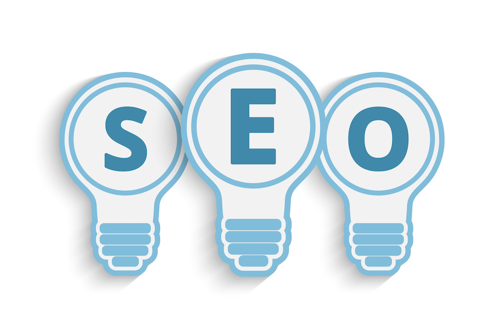

Vad kan vi erbjuda?
Sökmotoroptimering (SEO) handlar om att tydliggöra vilka tjänster och produkter ditt företag tillhandahåller. En tydlig och användarvänlig hemsida får organisk trafik!
Vi anser att minst 60% av trafiken till en hemsida ska ske organiskt. Sökmotorerna Google och Bings träfflistor är uppdelade i två delar där dom fyra översta annonserna är betalda annonser och dom underliggande är organiska annonser.
För dom organiska annonser som visas i träfflistan matchas sökningar mot relevansen i en hemsidas innehåll och det är utifrån poängsystem som bland annat bedömer relevans och användarvänlighet som också bestämmer vilka organiska annonsvisningar vi får hos sökmotorerna.
Fram till 2013 var det möjligt att påverka sökmotorers organiska listning via länkkraft från hemsidor som få besökte eller inga alls besökte, den möjligheten är sedan sedan dess borttagen och du riskerar nu istället att straffas med sämre listning om du arbetar med SEO genom länkkraft.
Vi kan nå en organisk trafikökning på mer än 40% under 6 månader genom att lägga fokus på att tydliggöra vad ert företag arbetar med och vad ni erbjuder för tjänster och produkter!
Utifrån er målgrupps demografi bygger vi framgångsrika kampanjer i sociala medier! Det är viktigt att göra en bra analys över målgruppens demografi för att lyckas med kampanjer i sociala medier. Vi gillar att om möjligt arbeta med flera olika banners och kampanjerbjudanden för en annonsör under samma tidsperiod och utifrån resultat förfina optimeringen mot erbjudande, geografi och målgrupp.
Resultatet av våra kampanjer i sociala medier mäts i en ökning av kvalitetstrafik till hemsida och på konvertering (köp, intresseanmälan eller nedladdning).
Kontakta oss så ger vi förslag på hur vi skulle arbeta med kampanjer i sociala medier för ditt företag!
I dag styrs bannerannonser via annonsbörser även kallar DSP (demand side platform) där vi som köpare i realtid optimerar våra bannerkampanjer utifrån resultat mätt i trafik och konvertering (köp, intresseanmälan eller nedladdning).
Utöver att bestämma vilka sajter och miljöer vår bannerkampanj ska visas i har vi möjlighet att lägga till beteendestyrning för att ytterligare öka relevansen i våra bannervisningar. Beteendestyrning innebär att vi använder surfbeteenden (besökshistorik) som underlag om vi ska visa ett visst budskap eller inte. Om en person exempelvis sökt eller besökt hemsidor som säljer bilar så ska vi visa banner med bilåterförsäljare eller om en person visat intresse för smycken så ska vi visa erbjudanden med smyckestillverkare eller smyckesåterförsäljare etc.
Kontakta oss så berättar vi mer om hur vi lyckas med bannerannonsering tillsammans med förslag på kampanjupplägg och prisuppgift.